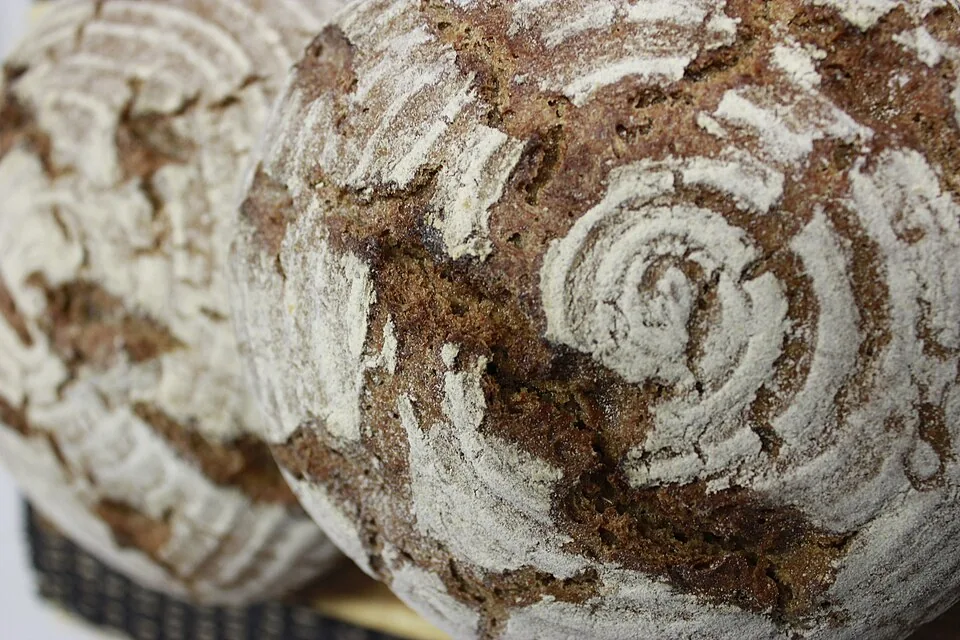

Roggenbrot

Bildquelle | Zuletzt aufgerufen am
Kräftiges Aroma und eine saftige, dichte Krume. Ein Stück mitteleuropäische Brotkultur.
- Herkunft
- Nord- & Mitteleuropa
- Getreide
- Roggen
- Geschmack
- Kräftig & würzig
Geschichte
Roggen kommt mit kühlen Temperaturen und weniger fruchtbaren Böden vergleichsweise gut zurecht. Das machte ihn in Nord-, Mittel- und Osteuropa zu einem wichtigen Brotgetreide. In Deutschland prägte er über lange Zeit die tägliche Brotversorgung; seine Bedeutung reichte weit über einzelne regionale Spezialitäten hinaus.
Zum Roggenbrot gehört traditionell die Arbeit mit Sauerteig. Die Säuerung unterstützt die Backfähigkeit roggenreicher Teige und prägt ihr Aroma. Bis heute begegnet man Roggenbroten von Deutschland und Polen bis ins Baltikum und nach Skandinavien – mit unterschiedlichen Formen, Gewürzen und Backweisen.
Quelle: BZfE: Getreide-ABC Roggen | Zuletzt aufgerufen am
Eigenschaften
- Zutaten
- Roggenmehl oder Roggenschrot, Wasser, Salz und meist Sauerteig. Manche Rezepte ergänzen etwas Hefe.
- Geschmack
- Kräftig getreidig, würzig und je nach Sauerteigführung mild bis deutlich säuerlich.
- Kruste
- Meist kräftig gebacken, oft dunkel und rustikal aufgerissen oder fein bemehlt.
- Krume
- Eher dicht und feinporig. Roggen bindet viel Wasser und sorgt für eine saftige Textur.
Kräftiger Käse, würzige Aufstriche oder einfach gesalzene Butter passen zu seinem herzhaften Charakter.
Weitere Informationen
- Kein Weizenteig Roggenteig entwickelt kein vergleichbares elastisches Glutengerüst. Seine Struktur entsteht beim Backen auf andere Weise.
- Säure mit Aufgabe Sauerteig bringt Aroma und hilft, die Stärke in roggenreichen Broten beim Backen zu stabilisieren.
- Eine Frage der Mischung Roggenbrot und Roggenmischbrot sind unterschiedliche Bezeichnungen. Beim Mischbrot spielt auch Weizen eine größere Rolle.
Rezept
Ein Roggenbrot mit Vorteig und einer längeren Reifezeit.
Reines Roggenbrot mit Sauerteig auf Chefkoch | Zuletzt aufgerufen am